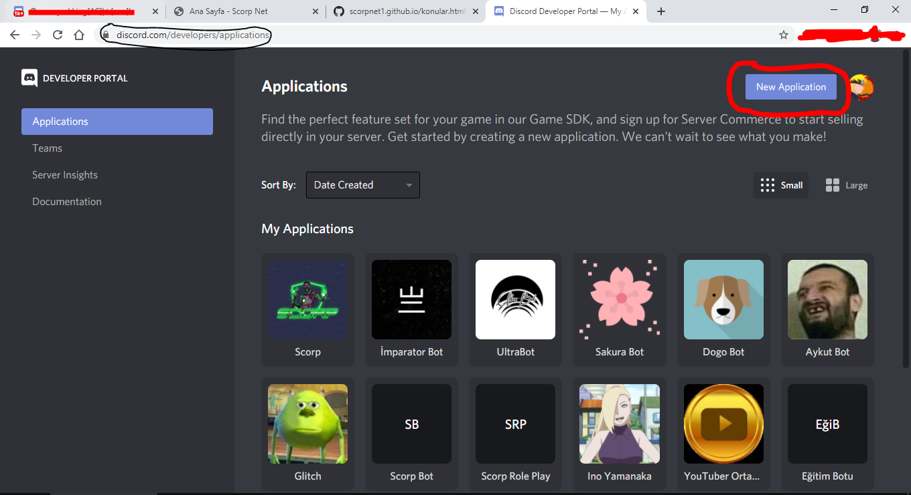
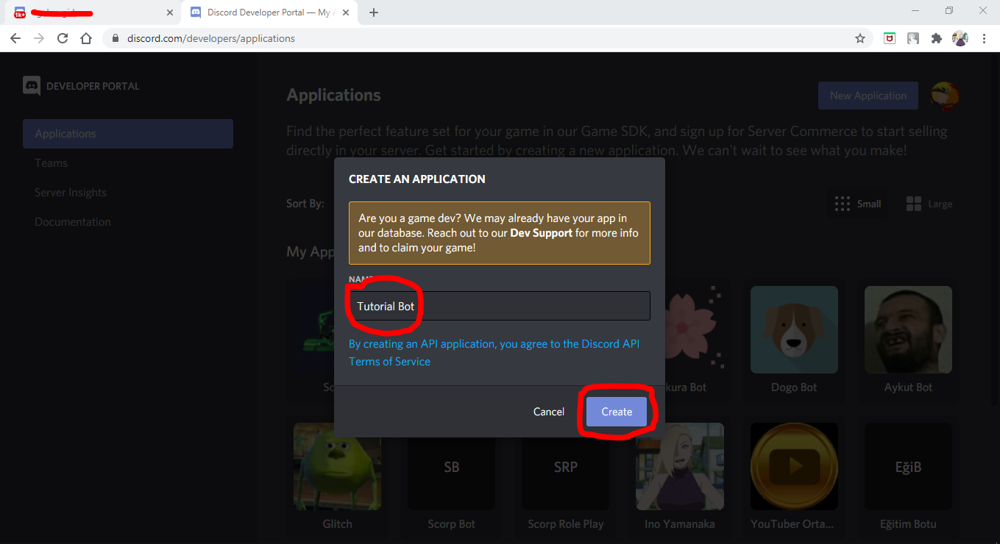
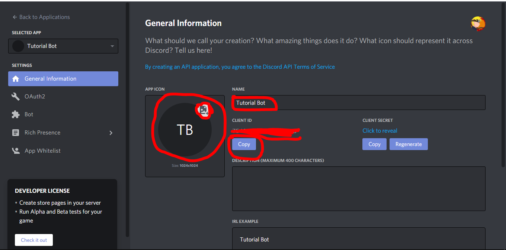
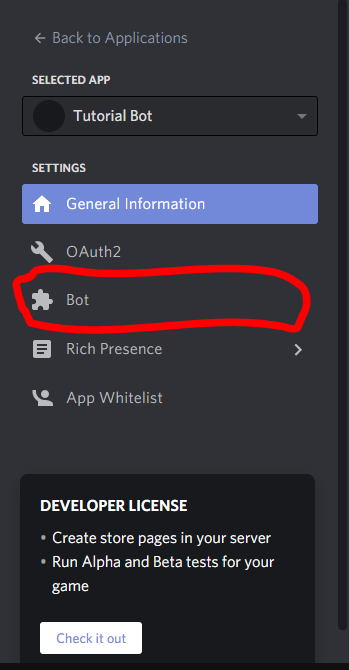
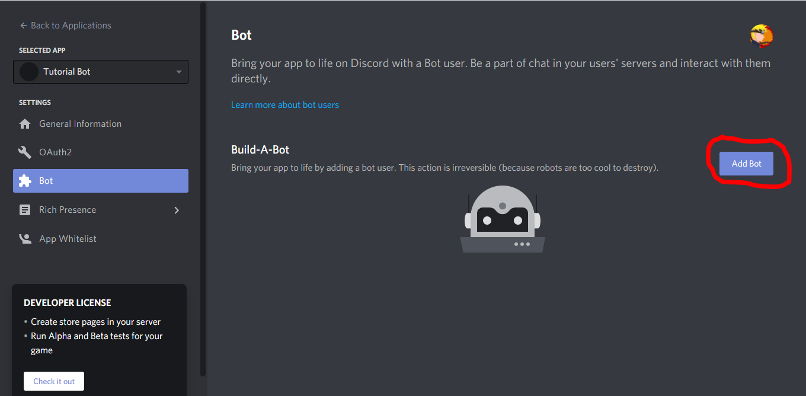
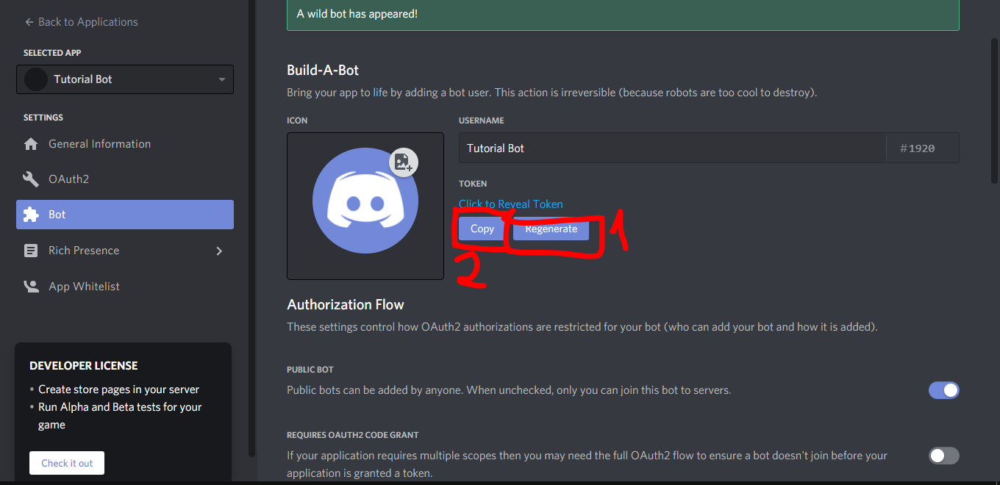

Discord Bot Yapımı :
İlk Önce Discord Developers'a Giriyoruz.Girmek için Buraya Tıklayabilirsiniz
Şimdi Sağ Üstte New Application'a Tıklıyoruz. 
Çıkan Yerden Botumuzun Adını Giriyoruz ve Oluşturuyoruz. 
Botumuz Oluştu,Menüden Botumuzun Adını,Profil Resmini vb. Yönetebiliyoruz 
Soldaki Menüden Bot Kısmına Tıklıyoruz. 
Ve Sağ Üstteki Butona Basıp Yes'e Tıklıyoruz 
İlk Önce Regenerate'e Daha Sonra Copy'e Tıklıyoruz. 
Şimdi İse Botumuzun Dosyalarını İndirelim. Buraya Tıklayarak Komurları İndirebilirsiniz (RAR ŞİFRESİ : starktom++)
İndirkten Sonra ayarlar.json'u Açıp Sahip Kısmına Kendi Kullanıcı İd'nizi,Prefix Kısmına Botunuzun Önekini(Prefixini) ve Token Kısmına Daha Önce Kopyaladığımız Tokeni Yazıyoruz.
başlat.bat'dan Botunuzu Başlatın.
Botunuzu Sunucunuza Davet Edin ve Keyfini Çıkarın.
|